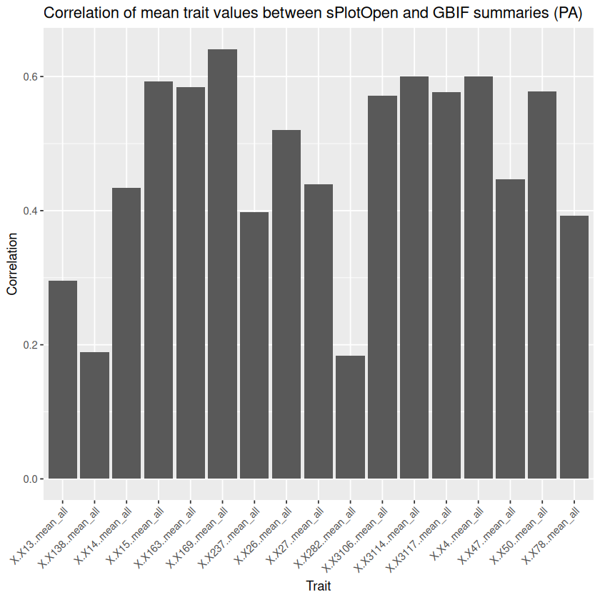
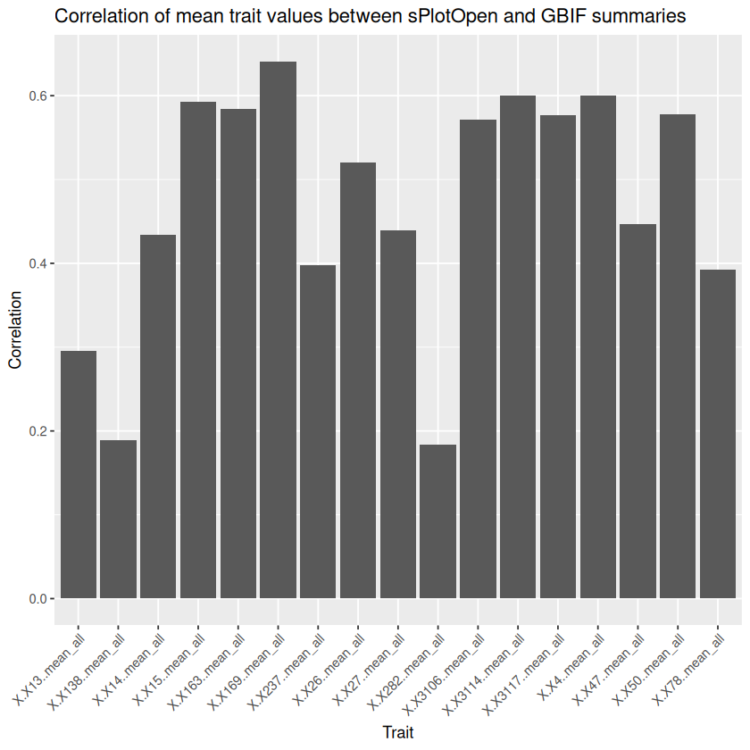
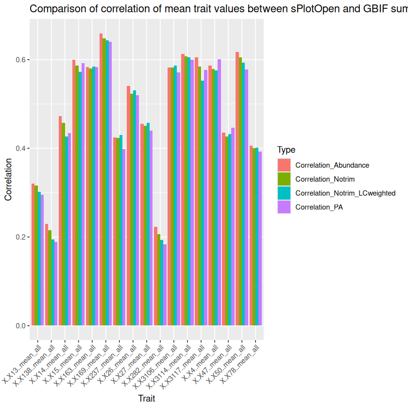
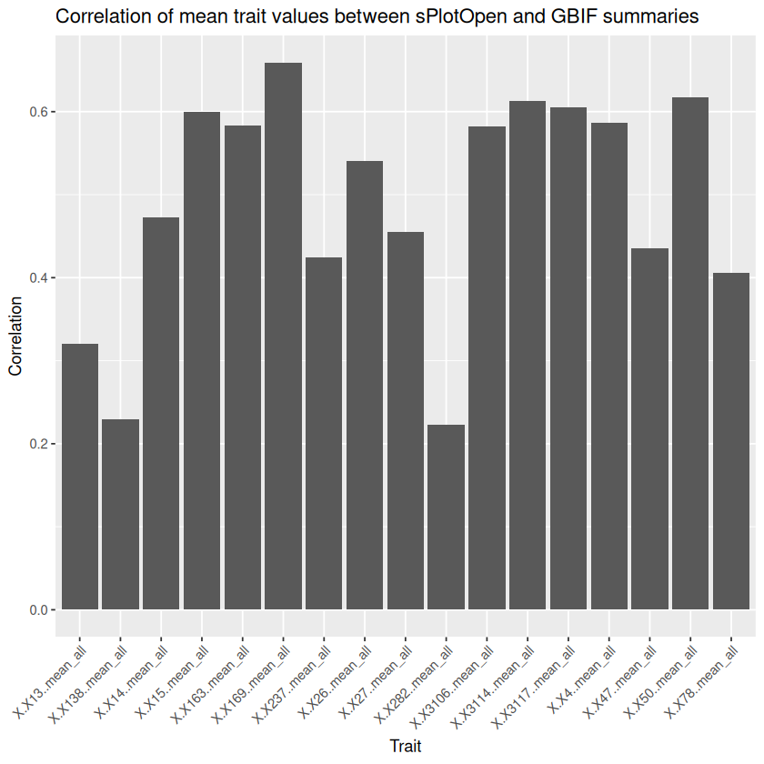

Global Spectrum of Plant Form and Function
Contents
# ignore this
.libPaths(c("/net/home/swolf/R/x86_64-pc-linux-gnu-library/4.4", .libPaths()))
Global Spectrum of Plant Form and Function#
References#
Diaz et al., 2016, Global Spectrum of Plant Form and Function
Weigelt et al. 2021, An integrated framework of plant form and function: the belowground perspective
Wolf et al. 2022, Citizen science plant observations encode global trait patterns
Exercise Outline#
Correlate sPlotOpen data with trait grid cell averages
Calculate PCA with top traits from correlation analysis (come up with a good cut-off)
Plot variance explained
Plot biplots with loadings
Create global maps for the PCs that explain most variance
Try to interpret PCs in ecological terms
Describe what regions are not well covered and discuss how this may influence the PCA
Choose a biome and quantify and visualitze trait shifts from native -> all in a specific biome
Data#
Grid-cell averages:
/net/scratch/swolf/GBIF/gbif_CS_glonaf_wcvp_res3_try6_mean_imp.csvh3_res3: h3 hexagonal equal-area grid cells at reolution 3
group: only indigenous observations (native) and indigenous+non-indigenous observations
count: number of occurences per grid cell (sampling density)
37 above- and below-ground plant functional traits (citizen-science species occurrence merged with TRY trait data), gap-filled
sPlotOpen:
~/iNaturalist/Data/sPlotOpen/cwm_loc.csvPlotID
Latitude
Longitude
Community weighted means (CWM’s) for 18 above-ground traits ln-transformed!
Trait names:
~/Func_Neo_Phytes/Data/trait_info.csvWWF biomes shapefile:
~/iNaturalist/Data/WWF/wwf_terr_ecos.shp
Corrlate with sPlotOpen#
Calculate grid-cell sPlotOpen averages
# read ~/iNaturalist/Data/sPlotOpen/cwm_loc.csv
splotopen <- read.csv("~/iNaturalist/Data/sPlotOpen/cwm_loc.csv")
head(splotopen)
| PlotObservationID | TraitCoverage_cover | Species_richness | TraitCoverage_pa | Leaf.Area | SSD | SLA | Leaf.C | Leaf.N.per.mass | Leaf.P | ⋯ | Height_shrubs_lowest | Height_herbs_average | Height_herbs_lowest | Height_herbs_highest | SoilClim_PC1 | SoilClim_PC2 | Resample_1 | Resample_2 | Resample_3 | Resample_1_consensus | |
|---|---|---|---|---|---|---|---|---|---|---|---|---|---|---|---|---|---|---|---|---|---|
| <int> | <dbl> | <int> | <dbl> | <dbl> | <dbl> | <dbl> | <dbl> | <dbl> | <dbl> | ⋯ | <dbl> | <dbl> | <dbl> | <dbl> | <dbl> | <dbl> | <chr> | <chr> | <chr> | <chr> | |
| 1 | 16 | 0.27777778 | 3 | 0.3333333 | 3.678311 | -1.0472931 | 2.890748 | 6.128157 | 2.873263 | 1.1140362 | ⋯ | NA | NA | NA | NA | -3.66 | 0.546 | True | False | False | True |
| 2 | 17 | 0.03846154 | 2 | 0.5000000 | 3.678311 | -1.0472931 | 2.890748 | 6.128157 | 2.873263 | 1.1140362 | ⋯ | NA | NA | NA | NA | -3.66 | 0.546 | True | False | False | True |
| 3 | 18 | 0.04761905 | 4 | 0.2500000 | 3.678311 | -1.0472931 | 2.890748 | 6.128157 | 2.873263 | 1.1140362 | ⋯ | NA | NA | NA | NA | -3.66 | 0.546 | False | False | True | False |
| 4 | 20 | 0.66666667 | 3 | 0.3333333 | 3.686063 | -0.9071351 | 2.903715 | 6.136791 | 2.929729 | 0.7391809 | ⋯ | NA | NA | NA | NA | -3.66 | 0.546 | False | True | False | False |
| 5 | 22 | 0.53846154 | 7 | 0.5714286 | 3.899842 | -0.9005136 | 2.917708 | 6.131968 | 2.955072 | 0.7336978 | ⋯ | NA | NA | NA | NA | -3.66 | 0.546 | True | False | False | True |
| 6 | 23 | 0.95238095 | 13 | 0.8461538 | 4.225747 | -0.8226879 | 2.638385 | 6.158266 | 2.843045 | 0.2463386 | ⋯ | NA | NA | NA | NA | -3.66 | 0.546 | False | False | True | False |
head(splotopen)
dim(splotopen)
| PlotObservationID | TraitCoverage_cover | Species_richness | TraitCoverage_pa | Leaf.Area | SSD | SLA | Leaf.C | Leaf.N.per.mass | Leaf.P | ⋯ | Height_shrubs_lowest | Height_herbs_average | Height_herbs_lowest | Height_herbs_highest | SoilClim_PC1 | SoilClim_PC2 | Resample_1 | Resample_2 | Resample_3 | Resample_1_consensus | |
|---|---|---|---|---|---|---|---|---|---|---|---|---|---|---|---|---|---|---|---|---|---|
| <int> | <dbl> | <int> | <dbl> | <dbl> | <dbl> | <dbl> | <dbl> | <dbl> | <dbl> | ⋯ | <dbl> | <dbl> | <dbl> | <dbl> | <dbl> | <dbl> | <chr> | <chr> | <chr> | <chr> | |
| 1 | 16 | 0.27777778 | 3 | 0.3333333 | 3.678311 | -1.0472931 | 2.890748 | 6.128157 | 2.873263 | 1.1140362 | ⋯ | NA | NA | NA | NA | -3.66 | 0.546 | True | False | False | True |
| 2 | 17 | 0.03846154 | 2 | 0.5000000 | 3.678311 | -1.0472931 | 2.890748 | 6.128157 | 2.873263 | 1.1140362 | ⋯ | NA | NA | NA | NA | -3.66 | 0.546 | True | False | False | True |
| 3 | 18 | 0.04761905 | 4 | 0.2500000 | 3.678311 | -1.0472931 | 2.890748 | 6.128157 | 2.873263 | 1.1140362 | ⋯ | NA | NA | NA | NA | -3.66 | 0.546 | False | False | True | False |
| 4 | 20 | 0.66666667 | 3 | 0.3333333 | 3.686063 | -0.9071351 | 2.903715 | 6.136791 | 2.929729 | 0.7391809 | ⋯ | NA | NA | NA | NA | -3.66 | 0.546 | False | True | False | False |
| 5 | 22 | 0.53846154 | 7 | 0.5714286 | 3.899842 | -0.9005136 | 2.917708 | 6.131968 | 2.955072 | 0.7336978 | ⋯ | NA | NA | NA | NA | -3.66 | 0.546 | True | False | False | True |
| 6 | 23 | 0.95238095 | 13 | 0.8461538 | 4.225747 | -0.8226879 | 2.638385 | 6.158266 | 2.843045 | 0.2463386 | ⋯ | NA | NA | NA | NA | -3.66 | 0.546 | False | False | True | False |
- 95104
- 86
# add h3 hexagonal grid cell code at resolution 3
library(h3)
splotopen$h3_res3 <- geo_to_h3(cbind(splotopen$Latitude, splotopen$Longitude), res = 3)
head(splotopen)
| PlotObservationID | TraitCoverage_cover | Species_richness | TraitCoverage_pa | Leaf.Area | SSD | SLA | Leaf.C | Leaf.N.per.mass | Leaf.P | ⋯ | Height_herbs_average | Height_herbs_lowest | Height_herbs_highest | SoilClim_PC1 | SoilClim_PC2 | Resample_1 | Resample_2 | Resample_3 | Resample_1_consensus | h3_res3 | |
|---|---|---|---|---|---|---|---|---|---|---|---|---|---|---|---|---|---|---|---|---|---|
| <int> | <dbl> | <int> | <dbl> | <dbl> | <dbl> | <dbl> | <dbl> | <dbl> | <dbl> | ⋯ | <dbl> | <dbl> | <dbl> | <dbl> | <dbl> | <chr> | <chr> | <chr> | <chr> | <chr> | |
| 1 | 16 | 0.27777778 | 3 | 0.3333333 | 3.678311 | -1.0472931 | 2.890748 | 6.128157 | 2.873263 | 1.1140362 | ⋯ | NA | NA | NA | -3.66 | 0.546 | True | False | False | True | 830c0dfffffffff |
| 2 | 17 | 0.03846154 | 2 | 0.5000000 | 3.678311 | -1.0472931 | 2.890748 | 6.128157 | 2.873263 | 1.1140362 | ⋯ | NA | NA | NA | -3.66 | 0.546 | True | False | False | True | 830c0dfffffffff |
| 3 | 18 | 0.04761905 | 4 | 0.2500000 | 3.678311 | -1.0472931 | 2.890748 | 6.128157 | 2.873263 | 1.1140362 | ⋯ | NA | NA | NA | -3.66 | 0.546 | False | False | True | False | 830c0dfffffffff |
| 4 | 20 | 0.66666667 | 3 | 0.3333333 | 3.686063 | -0.9071351 | 2.903715 | 6.136791 | 2.929729 | 0.7391809 | ⋯ | NA | NA | NA | -3.66 | 0.546 | False | True | False | False | 830c0dfffffffff |
| 5 | 22 | 0.53846154 | 7 | 0.5714286 | 3.899842 | -0.9005136 | 2.917708 | 6.131968 | 2.955072 | 0.7336978 | ⋯ | NA | NA | NA | -3.66 | 0.546 | True | False | False | True | 830c0dfffffffff |
| 6 | 23 | 0.95238095 | 13 | 0.8461538 | 4.225747 | -0.8226879 | 2.638385 | 6.158266 | 2.843045 | 0.2463386 | ⋯ | NA | NA | NA | -3.66 | 0.546 | False | False | True | False | 830c0dfffffffff |
# columns splotopen
colnames(splotopen)
# filter for: 'Latitude','Longitude', 'Leaf.Area','SSD','SLA','Leaf.C','Leaf.N.per.mass','Leaf.P','Plant.Height','Seed.mass','Seed.length','LDMC','Leaf.N.per.area','Leaf.N.P.ratio','Leaf.delta15N','Seeds.per.rep..unit','Leaf.fresh.mass','Stem.conduit.density','Dispersal.unit.length','Conduit.element.length'
splotopen_sub <- splotopen[, c('Latitude','Longitude', 'Leaf.Area','SSD','SLA','Leaf.C','Leaf.N.per.mass','Leaf.P','Plant.Height','Seed.mass','Seed.length','LDMC','Leaf.N.per.area','Leaf.N.P.ratio','Leaf.delta15N','Seeds.per.rep..unit','Leaf.fresh.mass','Stem.conduit.density','Dispersal.unit.length','Conduit.element.length', 'h3_res3')]
head(splotopen_sub)
- 'PlotObservationID'
- 'TraitCoverage_cover'
- 'Species_richness'
- 'TraitCoverage_pa'
- 'Leaf.Area'
- 'SSD'
- 'SLA'
- 'Leaf.C'
- 'Leaf.N.per.mass'
- 'Leaf.P'
- 'Plant.Height'
- 'Seed.mass'
- 'Seed.length'
- 'LDMC'
- 'Leaf.N.per.area'
- 'Leaf.N.P.ratio'
- 'Leaf.delta15N'
- 'Seeds.per.rep..unit'
- 'Leaf.fresh.mass'
- 'Stem.conduit.density'
- 'Dispersal.unit.length'
- 'Conduit.element.length'
- 'LeafArea_CWV'
- 'StemDens_CWV'
- 'SLA_CWV'
- 'LeafC_perdrymass_CWV'
- 'LeafN_CWV'
- 'LeafP_CWV'
- 'PlantHeight_CWV'
- 'SeedMass_CWV'
- 'Seed_length_CWV'
- 'LDMC_CWV'
- 'LeafNperArea_CWV'
- 'LeafNPratio_CWV'
- 'Leaf_delta_15N_CWV'
- 'Seed_num_rep_unit_CWV'
- 'Leaffreshmass_CWV'
- 'Stem_cond_dens_CWV'
- 'Disp_unit_leng_CWV'
- 'Wood_vessel_length_CWV'
- 'GIVD_ID'
- 'Dataset'
- 'Continent'
- 'Country'
- 'Biome'
- 'Date_of_recording'
- 'Latitude'
- 'Longitude'
- 'Location_uncertainty'
- 'Releve_area'
- 'Plant_recorded'
- 'Elevation'
- 'Aspect'
- 'Slope'
- 'is_forest'
- 'ESY'
- 'Naturalness'
- 'Forest'
- 'Shrubland'
- 'Grassland'
- 'Wetland'
- 'Sparse_vegetation'
- 'Cover_total'
- 'Cover_tree_layer'
- 'Cover_shrub_layer'
- 'Cover_herb_layer'
- 'Cover_moss_layer'
- 'Cover_lichen_layer'
- 'Cover_algae_layer'
- 'Cover_litter_layer'
- 'Cover_bare_rocks'
- 'Cover_cryptogams'
- 'Cover_bare_soil'
- 'Height_trees_highest'
- 'Height_trees_lowest'
- 'Height_shrubs_highest'
- 'Height_shrubs_lowest'
- 'Height_herbs_average'
- 'Height_herbs_lowest'
- 'Height_herbs_highest'
- 'SoilClim_PC1'
- 'SoilClim_PC2'
- 'Resample_1'
- 'Resample_2'
- 'Resample_3'
- 'Resample_1_consensus'
- 'h3_res3'
| Latitude | Longitude | Leaf.Area | SSD | SLA | Leaf.C | Leaf.N.per.mass | Leaf.P | Plant.Height | Seed.mass | ⋯ | LDMC | Leaf.N.per.area | Leaf.N.P.ratio | Leaf.delta15N | Seeds.per.rep..unit | Leaf.fresh.mass | Stem.conduit.density | Dispersal.unit.length | Conduit.element.length | h3_res3 | |
|---|---|---|---|---|---|---|---|---|---|---|---|---|---|---|---|---|---|---|---|---|---|
| <dbl> | <dbl> | <dbl> | <dbl> | <dbl> | <dbl> | <dbl> | <dbl> | <dbl> | <dbl> | ⋯ | <dbl> | <dbl> | <dbl> | <dbl> | <dbl> | <dbl> | <dbl> | <dbl> | <dbl> | <chr> | |
| 1 | 62.42 | -154.18 | 3.678311 | -1.0472931 | 2.890748 | 6.128157 | 2.873263 | 1.1140362 | -1.514747 | -0.8974327 | ⋯ | -1.150683 | 0.02488157 | 1.874128 | -0.26474963 | 5.633945 | -4.387745 | 3.483073 | 1.4707414 | 5.859517 | 830c0dfffffffff |
| 2 | 62.42 | -154.18 | 3.678311 | -1.0472931 | 2.890748 | 6.128157 | 2.873263 | 1.1140362 | -1.514747 | -0.8974327 | ⋯ | -1.150683 | 0.02488157 | 1.874128 | -0.26474963 | 5.633945 | -4.387745 | 3.483073 | 1.4707414 | 5.859517 | 830c0dfffffffff |
| 3 | 62.42 | -154.18 | 3.678311 | -1.0472931 | 2.890748 | 6.128157 | 2.873263 | 1.1140362 | -1.514747 | -0.8974327 | ⋯ | -1.150683 | 0.02488157 | 1.874128 | -0.26474963 | 5.633945 | -4.387745 | 3.483073 | 1.4707414 | 5.859517 | 830c0dfffffffff |
| 4 | 62.42 | -154.18 | 3.686063 | -0.9071351 | 2.903715 | 6.136791 | 2.929729 | 0.7391809 | -2.711473 | -1.4176030 | ⋯ | -1.325711 | 0.10771463 | 1.999404 | -0.07620884 | 3.036499 | -4.124691 | 5.337666 | 0.2529022 | 6.570591 | 830c0dfffffffff |
| 5 | 62.42 | -154.18 | 3.899842 | -0.9005136 | 2.917708 | 6.131968 | 2.955072 | 0.7336978 | -2.543448 | -1.5289868 | ⋯ | -1.376588 | 0.12292733 | 2.036662 | 0.07353869 | 3.451333 | -3.968128 | 5.380727 | 0.2425250 | 6.558434 | 830c0dfffffffff |
| 6 | 62.42 | -154.18 | 4.225747 | -0.8226879 | 2.638385 | 6.158266 | 2.843045 | 0.2463386 | -2.317137 | -2.1087247 | ⋯ | -1.258091 | 0.36134536 | 2.416301 | 1.54905075 | 5.902387 | -3.320130 | 6.523344 | 0.1827669 | 6.420502 | 830c0dfffffffff |
# mean trait values per h3 hexagon
library(dplyr)
splotopen_summary <- splotopen_sub %>%
group_by(h3_res3) %>%
summarise(across(c('Leaf.Area','SSD','SLA','Leaf.C','Leaf.N.per.mass','Leaf.P','Plant.Height','Seed.mass','Seed.length','LDMC','Leaf.N.per.area','Leaf.N.P.ratio','Leaf.delta15N','Seeds.per.rep..unit','Leaf.fresh.mass','Stem.conduit.density','Dispersal.unit.length','Conduit.element.length'), mean, na.rm = TRUE))
head(splotopen_summary)
| h3_res3 | Leaf.Area | SSD | SLA | Leaf.C | Leaf.N.per.mass | Leaf.P | Plant.Height | Seed.mass | Seed.length | LDMC | Leaf.N.per.area | Leaf.N.P.ratio | Leaf.delta15N | Seeds.per.rep..unit | Leaf.fresh.mass | Stem.conduit.density | Dispersal.unit.length | Conduit.element.length |
|---|---|---|---|---|---|---|---|---|---|---|---|---|---|---|---|---|---|---|
| <chr> | <dbl> | <dbl> | <dbl> | <dbl> | <dbl> | <dbl> | <dbl> | <dbl> | <dbl> | <dbl> | <dbl> | <dbl> | <dbl> | <dbl> | <dbl> | <dbl> | <dbl> | <dbl> |
| 830029fffffffff | 4.983938 | -0.9251577 | 2.819308 | 6.120789 | 2.772351 | 0.7519362 | -1.3260369 | -1.4501626 | 0.2122733 | -1.2841427 | 0.04431570 | 2.073657 | 0.5747993 | 5.070152 | -3.210677 | 4.778762 | 0.2273849 | 6.897906 |
| 83002cfffffffff | 5.500166 | -0.9672893 | 2.897689 | 6.075411 | 2.885079 | 0.5934793 | -1.7034084 | -0.8107227 | 0.6922639 | -1.2627500 | 0.06254204 | 2.192884 | 0.3916957 | 4.845040 | -2.795763 | 5.203334 | 0.7633169 | 6.186453 |
| 830120fffffffff | 5.944930 | -0.9083811 | 2.674230 | 6.165949 | 2.912700 | 0.3957971 | -0.8568235 | -0.3758094 | 0.8491797 | -1.0455759 | 0.29428585 | 2.370993 | 0.3740397 | 4.808872 | -2.465077 | 5.418334 | 0.9021428 | 5.988136 |
| 830122fffffffff | 4.863443 | -0.5982236 | 2.684737 | 6.245826 | 2.809547 | 0.3715139 | -0.3050638 | -0.5378673 | 1.1803582 | -1.1330655 | 0.17441919 | 2.340810 | 0.3816341 | 5.723034 | -3.629366 | 5.509091 | 0.9571266 | 6.024107 |
| 830124fffffffff | 5.296135 | -0.9112658 | 2.413249 | 6.183430 | 2.790786 | 0.2564264 | -0.7978294 | -0.3393554 | 0.9659792 | -0.9657587 | 0.43157874 | 2.444409 | 0.3723660 | 4.253638 | -2.956475 | 5.828351 | 1.0894628 | 6.132467 |
| 830126fffffffff | 5.144689 | -0.7854563 | 2.474994 | 6.193215 | 2.785938 | 0.2921896 | -0.5196718 | -0.5391000 | 1.0238321 | -1.0301391 | 0.35167043 | 2.418011 | 0.4509752 | 4.929886 | -3.214894 | 5.502269 | 1.0434030 | 6.033372 |
# read /net/scratch/swolf/GBIF/gbif_res3_try6_CS_wcvp_summary_stats_inkl_pca_mean_log10.csv
gbif_summary <- read.csv("/net/scratch/swolf/GBIF/gbif_res3_try6_CS_wcvp_summary_stats_inkl_pca_mean_log10.csv")
gbif_summary_pa <- read.csv("/net/scratch/swolf/GBIF/gbif_glonaf_wcvp_h3_res3_try6_summary_stats_all_CS_log10_unique.csv")
gbif_summary_notrim <- read.csv("/net/scratch/swolf/GBIF/gbif_glonaf_wcvp_h3_res3_try6_summary_stats_all_CS_log10_notrim.csv")
gibif_summary_notrim_lcweighted <- read.csv("/net/scratch/swolf/GBIF/gbif_glonaf_wcvp_h3_res3_try6_summary_stats_all_CS_log10_notrim_LCweighted.csv")
head(gibif_summary_notrim_lcweighted)
| h3_cell | V1 | V2 | V3 | V4 | V5 | V6 | V7 | V8 | X.X3117..mean_all | ⋯ | X.X78..median_native | X.X78..percent_change_mean | X.X78..percent_change_median | X.X4..mean_all | X.X4..mean_native | X.X4..median_all | X.X4..median_native | X.X4..percent_change_mean | X.X4..percent_change_median | resolution | |
|---|---|---|---|---|---|---|---|---|---|---|---|---|---|---|---|---|---|---|---|---|---|
| <chr> | <int> | <int> | <int> | <int> | <int> | <int> | <dbl> | <dbl> | <dbl> | ⋯ | <dbl> | <dbl> | <dbl> | <dbl> | <dbl> | <dbl> | <dbl> | <dbl> | <dbl> | <chr> | |
| 1 | 83001afffffffff | 10 | 10 | 4 | 4 | 0 | 13 | 0.00 | 86.67 | 21.33558 | ⋯ | -0.585 | 0 | 0 | 0.3325776 | 0.3325776 | 0.334 | 0.334 | 0 | 0 | h3_res3 |
| 2 | 83001cfffffffff | 1 | 1 | 1 | 1 | 0 | 1 | 0.00 | 50.00 | 15.25894 | ⋯ | -0.563 | 0 | 0 | NA | NA | NA | NA | NA | NA | h3_res3 |
| 3 | 83001efffffffff | 4 | 4 | 3 | 3 | 0 | 3 | 0.00 | 75.00 | 13.83113 | ⋯ | -2.360 | 0 | 0 | 0.5279872 | 0.5279872 | 0.414 | 0.414 | 0 | 0 | h3_res3 |
| 4 | 830025fffffffff | 16 | 16 | 8 | 8 | 0 | 12 | 0.00 | 75.00 | 20.99629 | ⋯ | -0.174 | 0 | 0 | 0.3368347 | 0.3368347 | 0.334 | 0.334 | 0 | 0 | h3_res3 |
| 5 | 830028fffffffff | 58 | 58 | 13 | 13 | 3 | 41 | 5.17 | 70.69 | 14.27857 | ⋯ | -0.827 | 0 | 0 | 0.4406293 | 0.4406293 | 0.495 | 0.495 | 0 | 0 | h3_res3 |
| 6 | 830029fffffffff | 38 | 38 | 13 | 13 | 2 | 26 | 5.26 | 68.42 | 18.02754 | ⋯ | -0.412 | 0 | 0 | 0.3817664 | 0.3817664 | 0.334 | 0.334 | 0 | 0 | h3_res3 |
# rename gbif_summary_pa h3_cell to h3_res3
colnames(gbif_summary_pa)[colnames(gbif_summary_pa) == "h3_cell"] <- "h3_res3"
head(gbif_summary_pa)
# rename gbif_summary_notrim h3_cell to h3_res3
colnames(gbif_summary_notrim)[colnames(gbif_summary_notrim) == "h3_cell"] <- "h3_res3"
head(gbif_summary_notrim)
# rename gibif_summary_notrim_lcweighted h3_cell to h3_res3
colnames(gibif_summary_notrim_lcweighted)[colnames(gibif_summary_notrim_lcweighted) == "h3_cell"] <- "h3_res3"
head(gibif_summary_notrim_lcweighted)
| h3_res3 | V1 | V2 | V3 | V4 | V5 | V6 | V7 | V8 | X.X3117..mean_all | ⋯ | X.X78..median_native | X.X78..percent_change_mean | X.X78..percent_change_median | X.X4..mean_all | X.X4..mean_native | X.X4..median_all | X.X4..median_native | X.X4..percent_change_mean | X.X4..percent_change_median | resolution | |
|---|---|---|---|---|---|---|---|---|---|---|---|---|---|---|---|---|---|---|---|---|---|
| <chr> | <int> | <int> | <int> | <int> | <int> | <int> | <dbl> | <dbl> | <dbl> | ⋯ | <dbl> | <dbl> | <dbl> | <dbl> | <dbl> | <dbl> | <dbl> | <dbl> | <dbl> | <chr> | |
| 1 | 832830fffffffff | 2065 | 1241 | 2065 | 1241 | 678 | 1323 | 31.71 | 61.88 | 19.428 | ⋯ | 0.135 | 4783.33 | 130.37 | 0.427 | 0.434 | 0.417 | 0.422 | -1.61 | -1.18 | h3_res3 |
| 2 | 832834fffffffff | 1791 | 1055 | 1791 | 1055 | 575 | 1139 | 31.39 | 62.17 | 19.315 | ⋯ | 0.177 | 900.00 | 85.88 | 0.428 | 0.435 | 0.418 | 0.423 | -1.61 | -1.18 | h3_res3 |
| 3 | 832831fffffffff | 1264 | 773 | 1264 | 773 | 368 | 839 | 28.79 | 65.65 | 19.537 | ⋯ | 0.023 | 202.96 | 882.61 | 0.427 | 0.438 | 0.419 | 0.430 | -2.51 | -2.56 | h3_res3 |
| 4 | 832655fffffffff | 970 | 732 | 970 | 732 | 257 | 652 | 26.22 | 66.53 | 21.685 | ⋯ | -0.109 | 425.00 | 152.29 | 0.417 | 0.419 | 0.412 | 0.412 | -0.48 | 0.00 | h3_res3 |
| 5 | 832a16fffffffff | 1411 | 851 | 1411 | 851 | 432 | 921 | 30.04 | 64.05 | 23.030 | ⋯ | -0.276 | 92.44 | 100.36 | 0.415 | 0.418 | 0.401 | 0.400 | -0.72 | 0.25 | h3_res3 |
| 6 | 8329a5fffffffff | 1164 | 600 | 1164 | 600 | 443 | 684 | 37.10 | 57.29 | 18.369 | ⋯ | 0.427 | 23.71 | 53.16 | 0.437 | 0.443 | 0.428 | 0.438 | -1.35 | -2.28 | h3_res3 |
| h3_res3 | V1 | V2 | V3 | V4 | V5 | V6 | V7 | V8 | X.X3117..mean_all | ⋯ | X.X78..median_native | X.X78..percent_change_mean | X.X78..percent_change_median | X.X4..mean_all | X.X4..mean_native | X.X4..median_all | X.X4..median_native | X.X4..percent_change_mean | X.X4..percent_change_median | resolution | |
|---|---|---|---|---|---|---|---|---|---|---|---|---|---|---|---|---|---|---|---|---|---|
| <chr> | <int> | <int> | <int> | <int> | <int> | <int> | <dbl> | <dbl> | <dbl> | ⋯ | <dbl> | <dbl> | <dbl> | <dbl> | <dbl> | <dbl> | <dbl> | <dbl> | <dbl> | <chr> | |
| 1 | 832830fffffffff | 534527 | 378645 | 2065 | 1241 | 173836 | 343606 | 32.45 | 64.14 | 18.683 | ⋯ | -0.864 | 55.81 | 44.21 | 0.441 | 0.468 | 0.430 | 0.461 | -5.77 | -6.72 | h3_res3 |
| 2 | 832834fffffffff | 449715 | 334995 | 1791 | 1055 | 163478 | 274171 | 36.21 | 60.72 | 18.137 | ⋯ | -0.970 | 46.03 | 23.30 | 0.452 | 0.477 | 0.449 | 0.471 | -5.24 | -4.67 | h3_res3 |
| 3 | 832831fffffffff | 64487 | 51697 | 1264 | 773 | 20596 | 41557 | 31.90 | 64.37 | 18.786 | ⋯ | -1.237 | 39.08 | 32.01 | 0.441 | 0.460 | 0.437 | 0.458 | -4.13 | -4.59 | h3_res3 |
| 4 | 832655fffffffff | 18573 | 14586 | 970 | 732 | 5902 | 12240 | 31.58 | 65.50 | 22.963 | ⋯ | -0.276 | 115.56 | 9.42 | 0.441 | 0.446 | 0.435 | 0.438 | -1.12 | -0.68 | h3_res3 |
| 5 | 832a16fffffffff | 62447 | 38917 | 1411 | 851 | 25333 | 34918 | 40.37 | 55.65 | 25.057 | ⋯ | -0.860 | 54.81 | 61.86 | 0.422 | 0.440 | 0.406 | 0.426 | -4.09 | -4.69 | h3_res3 |
| 6 | 8329a5fffffffff | 75384 | 48845 | 1164 | 600 | 37219 | 36368 | 49.16 | 48.03 | 16.758 | ⋯ | -0.039 | 321.79 | 979.49 | 0.459 | 0.484 | 0.465 | 0.478 | -5.17 | -2.72 | h3_res3 |
| h3_res3 | V1 | V2 | V3 | V4 | V5 | V6 | V7 | V8 | X.X3117..mean_all | ⋯ | X.X78..median_native | X.X78..percent_change_mean | X.X78..percent_change_median | X.X4..mean_all | X.X4..mean_native | X.X4..median_all | X.X4..median_native | X.X4..percent_change_mean | X.X4..percent_change_median | resolution | |
|---|---|---|---|---|---|---|---|---|---|---|---|---|---|---|---|---|---|---|---|---|---|
| <chr> | <int> | <int> | <int> | <int> | <int> | <int> | <dbl> | <dbl> | <dbl> | ⋯ | <dbl> | <dbl> | <dbl> | <dbl> | <dbl> | <dbl> | <dbl> | <dbl> | <dbl> | <chr> | |
| 1 | 83001afffffffff | 10 | 10 | 4 | 4 | 0 | 13 | 0.00 | 86.67 | 21.33558 | ⋯ | -0.585 | 0 | 0 | 0.3325776 | 0.3325776 | 0.334 | 0.334 | 0 | 0 | h3_res3 |
| 2 | 83001cfffffffff | 1 | 1 | 1 | 1 | 0 | 1 | 0.00 | 50.00 | 15.25894 | ⋯ | -0.563 | 0 | 0 | NA | NA | NA | NA | NA | NA | h3_res3 |
| 3 | 83001efffffffff | 4 | 4 | 3 | 3 | 0 | 3 | 0.00 | 75.00 | 13.83113 | ⋯ | -2.360 | 0 | 0 | 0.5279872 | 0.5279872 | 0.414 | 0.414 | 0 | 0 | h3_res3 |
| 4 | 830025fffffffff | 16 | 16 | 8 | 8 | 0 | 12 | 0.00 | 75.00 | 20.99629 | ⋯ | -0.174 | 0 | 0 | 0.3368347 | 0.3368347 | 0.334 | 0.334 | 0 | 0 | h3_res3 |
| 5 | 830028fffffffff | 58 | 58 | 13 | 13 | 3 | 41 | 5.17 | 70.69 | 14.27857 | ⋯ | -0.827 | 0 | 0 | 0.4406293 | 0.4406293 | 0.495 | 0.495 | 0 | 0 | h3_res3 |
| 6 | 830029fffffffff | 38 | 38 | 13 | 13 | 2 | 26 | 5.26 | 68.42 | 18.02754 | ⋯ | -0.412 | 0 | 0 | 0.3817664 | 0.3817664 | 0.334 | 0.334 | 0 | 0 | h3_res3 |
Correlation sPlotOpen and community science-based grid cell averages for all traits
# read ~/Func_Neo_Phytes/Data/trait_info.csv
trait_info <- read.csv("~/Func_Neo_Phytes/Data/trait_info.csv")
trait_info
| TraitID | TraitID_TRY6 | TraitName | ShortName | sPlotOpenName | UnitName |
|---|---|---|---|---|---|
| <int> | <chr> | <chr> | <chr> | <chr> | <chr> |
| 4 | X.X4. | Stem specific density (SSD, stem dry mass per stem fresh volume) or wood density | SSD | SSD | g/cm3 |
| 6 | X.X6. | Root rooting depth | Rooting depth | m | |
| 13 | X.X13. | Leaf carbon (C) content per leaf dry mass | Leaf C | Leaf.C | mg/g |
| 14 | X.X14. | Leaf nitrogen (N) content per leaf dry mass | Leaf N | Leaf.N.per.mass | mg/g |
| 15 | X.X15. | Leaf phosphorus (P) content per leaf dry mass | Leaf P | Leaf.P | mg/g |
| 21 | X.X21. | Stem diameter | Stem diameter | m | |
| 26 | X.X26. | Seed dry mass | Seed dry mass | Seed.mass | mg |
| 27 | X.X27. | Seed length | Seed length | Seed.length | mm |
| 46 | X.X46. | Leaf thickness | Leaf thickness | mm | |
| 47 | X.X47. | Leaf dry mass per leaf fresh mass (leaf dry matter content, LDMC) | LDMC | LDMC | g/g |
| 50 | X.X50. | Leaf nitrogen (N) content per leaf area | Leaf N per area | Leaf.N.per.area | g m-2 |
| 55 | X.X55. | Leaf dry mass (single leaf) | Leaf dry mass | mg | |
| 78 | X.X78. | Leaf nitrogen (N) isotope signature (delta 15N) | Leaf delta 15N | Leaf.delta15N | per mill |
| 95 | X.X95. | Seed germination rate (germination efficiency) | Germination efficiency | % | |
| 138 | X.X138. | Seed number per reproduction unit | Seed number/rep. unit | Seeds.per.rep..unit | number |
| 144 | X.X144. | Leaf length | Leaf length | mm | |
| 145 | X.X145. | Leaf width | Leaf width | cm | |
| 146 | X.X146. | Leaf carbon/nitrogen (C/N) ratio | Leaf C/N ratio | g g-1 | |
| 163 | X.X163. | Leaf fresh mass | Leaf fresh mass | Leaf.fresh.mass | g |
| 169 | X.X169. | Stem conduit density (vessels and tracheids) | Stem conduit density | Stem.conduit.density | mm-2 |
| 223 | X.X223. | Species genotype: chromosome number | Chromosome number | n | |
| 224 | X.X224. | Species genotype: chromosome cDNA content | Chromosome cDNA content | pg | |
| 237 | X.X237. | Dispersal unit length | Dispersal unit length | Dispersal.unit.length | mm |
| 281 | X.X281. | Stem conduit diameter (vessels, tracheids) | Stem conduit diameter | micro m | |
| 282 | X.X282. | Wood vessel element length; stem conduit (vessel and tracheids) element length | Wood vessel element length | Conduit.element.length | micro m |
| 289 | X.X289. | Wood fiber lengths | Wood fiber lengths | micro m | |
| 297 | X.X297. | Wood rays per millimetre (wood ray density) | Wood ray density | 1/mm | |
| 351 | X.X351. | Seed number per dispersal unit | Seed number/disp. unit | number | |
| 614 | X.X614. | Fine root length per fine root dry mass (specific fine root length, SRL) | Specific fine root length | cm/g | |
| 1080 | X.X1080. | Root length per root dry mass (specific root length, SRL) | Specific root length | cm/g | |
| 3086 | X.X3086. | Leaf area per leaf dry mass (SLA or 1/LMA) petiole, rhachis and midrib excluded | SLA midrib excl. | mm2/mg | |
| 3106 | X.X3106. | Plant height vegetative | Plant height veg. | Plant.Height | m |
| 3107 | X.X3107. | Plant height generative | Plant height gen. | m | |
| 3108 | X.X3108. | Leaf area (in case of compound leaves: leaf, petiole excluded) | Leaf area 3108 | mm2 | |
| 3109 | X.X3109. | Leaf area (in case of compound leaves: leaflet, petiole excluded) | Leaf area 3109 | mm2 | |
| 3110 | X.X3110. | Leaf area (in case of compound leaves: leaf, petiole included) | Leaf area 3110 | mm2 | |
| 3111 | X.X3111. | Leaf area (in case of compound leaves: leaflet, petiole included) | Leaf area 3111 | mm2 | |
| 3112 | X.X3112. | Leaf area (in case of compound leaves: leaf, undefined if petiole in- or excluded) | Leaf area 3112 | mm2 | |
| 3113 | X.X3113. | Leaf area (in case of compound leaves: leaflet, undefined if petiole is in- or excluded) | Leaf area 3113 | mm2 | |
| 3114 | X.X3114. | Leaf area (in case of compound leaves undefined if leaf or leaflet, if petiole is in- or excluded) | Leaf area 3114 | Leaf.Area | mm2 |
| 3115 | X.X3115. | Leaf area per leaf dry mass (SLA or 1/LMA): petiole excluded | SLA petiole excl. | mm2/mg | |
| 3116 | X.X3116. | Leaf area per leaf dry mass (SLA or 1/LMA): petiole included | SLA petiole incl. | mm2/mg | |
| 3117 | X.X3117. | Leaf area per leaf dry mass (SLA or 1/LMA): undefined if petiole is in- or excluded | SLA petiole in- or excluded | SLA | mm2/mg |
| 3120 | X.X3120. | Leaf water content per leaf dry mass (not saturated) | Leaf water content not saturated | g(W)/g(DM) |
# make dictionary from trait_info: key = trait_infosPlotOpenName, value = TraitID_TRY6
trait_dict <- setNames(trait_info$TraitID_TRY6, trait_info$sPlotOpenName)
trait_dict
- SSD
- 'X.X4.'
- 2
- 'X.X6.'
- Leaf.C
- 'X.X13.'
- Leaf.N.per.mass
- 'X.X14.'
- Leaf.P
- 'X.X15.'
- 6
- 'X.X21.'
- Seed.mass
- 'X.X26.'
- Seed.length
- 'X.X27.'
- 9
- 'X.X46.'
- LDMC
- 'X.X47.'
- Leaf.N.per.area
- 'X.X50.'
- 12
- 'X.X55.'
- Leaf.delta15N
- 'X.X78.'
- 14
- 'X.X95.'
- Seeds.per.rep..unit
- 'X.X138.'
- 16
- 'X.X144.'
- 17
- 'X.X145.'
- 18
- 'X.X146.'
- Leaf.fresh.mass
- 'X.X163.'
- Stem.conduit.density
- 'X.X169.'
- 21
- 'X.X223.'
- 22
- 'X.X224.'
- Dispersal.unit.length
- 'X.X237.'
- 24
- 'X.X281.'
- Conduit.element.length
- 'X.X282.'
- 26
- 'X.X289.'
- 27
- 'X.X297.'
- 28
- 'X.X351.'
- 29
- 'X.X614.'
- 30
- 'X.X1080.'
- 31
- 'X.X3086.'
- Plant.Height
- 'X.X3106.'
- 33
- 'X.X3107.'
- 34
- 'X.X3108.'
- 35
- 'X.X3109.'
- 36
- 'X.X3110.'
- 37
- 'X.X3111.'
- 38
- 'X.X3112.'
- 39
- 'X.X3113.'
- Leaf.Area
- 'X.X3114.'
- 41
- 'X.X3115.'
- 42
- 'X.X3116.'
- SLA
- 'X.X3117.'
- 44
- 'X.X3120.'
# replace column names in splotopen_summary with TraitID_TRY6 from trait_dict
colnames(splotopen_summary) <- sapply(colnames(splotopen_summary), function(x) ifelse(x %in% names(trait_dict), trait_dict[x], x))
head(splotopen_summary)
| h3_res3 | X.X3114. | X.X4. | X.X3117. | X.X13. | X.X14. | X.X15. | X.X3106. | X.X26. | X.X27. | X.X47. | X.X50. | Leaf.N.P.ratio | X.X78. | X.X138. | X.X163. | X.X169. | X.X237. | X.X282. |
|---|---|---|---|---|---|---|---|---|---|---|---|---|---|---|---|---|---|---|
| <chr> | <dbl> | <dbl> | <dbl> | <dbl> | <dbl> | <dbl> | <dbl> | <dbl> | <dbl> | <dbl> | <dbl> | <dbl> | <dbl> | <dbl> | <dbl> | <dbl> | <dbl> | <dbl> |
| 830029fffffffff | 4.983938 | -0.9251577 | 2.819308 | 6.120789 | 2.772351 | 0.7519362 | -1.3260369 | -1.4501626 | 0.2122733 | -1.2841427 | 0.04431570 | 2.073657 | 0.5747993 | 5.070152 | -3.210677 | 4.778762 | 0.2273849 | 6.897906 |
| 83002cfffffffff | 5.500166 | -0.9672893 | 2.897689 | 6.075411 | 2.885079 | 0.5934793 | -1.7034084 | -0.8107227 | 0.6922639 | -1.2627500 | 0.06254204 | 2.192884 | 0.3916957 | 4.845040 | -2.795763 | 5.203334 | 0.7633169 | 6.186453 |
| 830120fffffffff | 5.944930 | -0.9083811 | 2.674230 | 6.165949 | 2.912700 | 0.3957971 | -0.8568235 | -0.3758094 | 0.8491797 | -1.0455759 | 0.29428585 | 2.370993 | 0.3740397 | 4.808872 | -2.465077 | 5.418334 | 0.9021428 | 5.988136 |
| 830122fffffffff | 4.863443 | -0.5982236 | 2.684737 | 6.245826 | 2.809547 | 0.3715139 | -0.3050638 | -0.5378673 | 1.1803582 | -1.1330655 | 0.17441919 | 2.340810 | 0.3816341 | 5.723034 | -3.629366 | 5.509091 | 0.9571266 | 6.024107 |
| 830124fffffffff | 5.296135 | -0.9112658 | 2.413249 | 6.183430 | 2.790786 | 0.2564264 | -0.7978294 | -0.3393554 | 0.9659792 | -0.9657587 | 0.43157874 | 2.444409 | 0.3723660 | 4.253638 | -2.956475 | 5.828351 | 1.0894628 | 6.132467 |
| 830126fffffffff | 5.144689 | -0.7854563 | 2.474994 | 6.193215 | 2.785938 | 0.2921896 | -0.5196718 | -0.5391000 | 1.0238321 | -1.0301391 | 0.35167043 | 2.418011 | 0.4509752 | 4.929886 | -3.214894 | 5.502269 | 1.0434030 | 6.033372 |
# add ".mean_all" to column names in splotopen_summary except for "h3_res3"
colnames(splotopen_summary) <- sapply(colnames(splotopen_summary), function(x) ifelse(x != "h3_res3", paste0(x, ".mean_native"), x))
head(splotopen_summary)
| h3_res3 | X.X3114..mean_native | X.X4..mean_native | X.X3117..mean_native | X.X13..mean_native | X.X14..mean_native | X.X15..mean_native | X.X3106..mean_native | X.X26..mean_native | X.X27..mean_native | X.X47..mean_native | X.X50..mean_native | Leaf.N.P.ratio.mean_native | X.X78..mean_native | X.X138..mean_native | X.X163..mean_native | X.X169..mean_native | X.X237..mean_native | X.X282..mean_native |
|---|---|---|---|---|---|---|---|---|---|---|---|---|---|---|---|---|---|---|
| <chr> | <dbl> | <dbl> | <dbl> | <dbl> | <dbl> | <dbl> | <dbl> | <dbl> | <dbl> | <dbl> | <dbl> | <dbl> | <dbl> | <dbl> | <dbl> | <dbl> | <dbl> | <dbl> |
| 830029fffffffff | 4.983938 | -0.9251577 | 2.819308 | 6.120789 | 2.772351 | 0.7519362 | -1.3260369 | -1.4501626 | 0.2122733 | -1.2841427 | 0.04431570 | 2.073657 | 0.5747993 | 5.070152 | -3.210677 | 4.778762 | 0.2273849 | 6.897906 |
| 83002cfffffffff | 5.500166 | -0.9672893 | 2.897689 | 6.075411 | 2.885079 | 0.5934793 | -1.7034084 | -0.8107227 | 0.6922639 | -1.2627500 | 0.06254204 | 2.192884 | 0.3916957 | 4.845040 | -2.795763 | 5.203334 | 0.7633169 | 6.186453 |
| 830120fffffffff | 5.944930 | -0.9083811 | 2.674230 | 6.165949 | 2.912700 | 0.3957971 | -0.8568235 | -0.3758094 | 0.8491797 | -1.0455759 | 0.29428585 | 2.370993 | 0.3740397 | 4.808872 | -2.465077 | 5.418334 | 0.9021428 | 5.988136 |
| 830122fffffffff | 4.863443 | -0.5982236 | 2.684737 | 6.245826 | 2.809547 | 0.3715139 | -0.3050638 | -0.5378673 | 1.1803582 | -1.1330655 | 0.17441919 | 2.340810 | 0.3816341 | 5.723034 | -3.629366 | 5.509091 | 0.9571266 | 6.024107 |
| 830124fffffffff | 5.296135 | -0.9112658 | 2.413249 | 6.183430 | 2.790786 | 0.2564264 | -0.7978294 | -0.3393554 | 0.9659792 | -0.9657587 | 0.43157874 | 2.444409 | 0.3723660 | 4.253638 | -2.956475 | 5.828351 | 1.0894628 | 6.132467 |
| 830126fffffffff | 5.144689 | -0.7854563 | 2.474994 | 6.193215 | 2.785938 | 0.2921896 | -0.5196718 | -0.5391000 | 1.0238321 | -1.0301391 | 0.35167043 | 2.418011 | 0.4509752 | 4.929886 | -3.214894 | 5.502269 | 1.0434030 | 6.033372 |
# correlate matching column names in splotopen_summary and gbif_summary
matching_cols <- intersect(colnames(splotopen_summary), colnames(gbif_summary))
matching_cols
- 'h3_res3'
- 'X.X3114..mean_native'
- 'X.X4..mean_native'
- 'X.X3117..mean_native'
- 'X.X13..mean_native'
- 'X.X14..mean_native'
- 'X.X15..mean_native'
- 'X.X3106..mean_native'
- 'X.X26..mean_native'
- 'X.X27..mean_native'
- 'X.X47..mean_native'
- 'X.X50..mean_native'
- 'X.X78..mean_native'
- 'X.X138..mean_native'
- 'X.X163..mean_native'
- 'X.X169..mean_native'
- 'X.X237..mean_native'
- 'X.X282..mean_native'
# helper to compute trait-wise correlations against any GBIF summary
compute_correlations <- function(gbif_df, splot_df = splotopen_summary) {
if ("h3_cell" %in% names(gbif_df)) {
names(gbif_df)[names(gbif_df) == "h3_cell"] <- "h3_res3"
}
trait_cols <- setdiff(intersect(names(splot_df), names(gbif_df)), "h3_res3")
corr_df <- merge(
splot_df[, c("h3_res3", trait_cols)],
gbif_df[, c("h3_res3", trait_cols)],
by = "h3_res3",
suffixes = c(".splot", ".gbif")
)
to_num <- function(z) {
if (is.numeric(z)) return(z)
suppressWarnings(as.numeric(as.character(z)))
}
sapply(trait_cols, function(col) {
x <- to_num(corr_df[[paste0(col, ".splot")]])
y <- to_num(corr_df[[paste0(col, ".gbif")]])
ok <- is.finite(x) & is.finite(y)
if (sum(ok) < 3) return(NA_real_)
cor(x[ok], y[ok])
})
}
cor_results <- compute_correlations(gbif_summary)
cor_results_pa <- compute_correlations(gbif_summary_pa)
cor_results_notrim <- compute_correlations(gbif_summary_notrim)
cor_results_notrim_lcweighted <- compute_correlations(gibif_summary_notrim_lcweighted)
# plot correlation results for presence-absence based summary (cor_results_pa)
library(ggplot2)
cor_df_long <- data.frame(
Trait = names(cor_results_pa),
Correlation = cor_results_pa
)
ggplot(cor_df_long, aes(x = Trait, y = Correlation)) +
geom_bar(stat = "identity") +
theme(axis.text.x = element_text(angle = 45, hjust = 1)) +
labs(title = "Correlation of mean trait values between sPlotOpen and GBIF summaries (PA)")
library(ggplot2)
cor_df_long <- data.frame(
Trait = names(cor_results_pa),
Correlation = cor_results_pa
)
ggplot(cor_df_long, aes(x = Trait, y = Correlation)) +
geom_bar(stat = "identity") +
theme(axis.text.x = element_text(angle = 45, hjust = 1)) +
labs(title = "Correlation of mean trait values between sPlotOpen and GBIF summaries")


# compare cor_results_pa and cor_results
cor_comparison <- data.frame(
Trait = names(cor_results_pa),
Correlation_PA = cor_results_pa,
Correlation_Abundance = cor_results,
Correlation_Notrim = cor_results_notrim,
Correlation_Notrim_LCweighted = cor_results_notrim_lcweighted
)
cor_comparison
| Trait | Correlation_PA | Correlation_Abundance | Correlation_Notrim | Correlation_Notrim_LCweighted | |
|---|---|---|---|---|---|
| <chr> | <dbl> | <dbl> | <dbl> | <dbl> | |
| X.X3114..mean_all | X.X3114..mean_all | 0.5996580 | 0.6131830 | 0.6073129 | 0.6055280 |
| X.X4..mean_all | X.X4..mean_all | 0.6005388 | 0.5861001 | 0.5791251 | 0.5750998 |
| X.X3117..mean_all | X.X3117..mean_all | 0.5767928 | 0.6047750 | 0.5846386 | 0.5529832 |
| X.X13..mean_all | X.X13..mean_all | 0.2956568 | 0.3201122 | 0.3161880 | 0.3013480 |
| X.X14..mean_all | X.X14..mean_all | 0.4338683 | 0.4728991 | 0.4577845 | 0.4270459 |
| X.X15..mean_all | X.X15..mean_all | 0.5923461 | 0.6001907 | 0.5869732 | 0.5726631 |
| X.X3106..mean_all | X.X3106..mean_all | 0.5713987 | 0.5821344 | 0.5817319 | 0.5866769 |
| X.X26..mean_all | X.X26..mean_all | 0.5199775 | 0.5409606 | 0.5235787 | 0.5309473 |
| X.X27..mean_all | X.X27..mean_all | 0.4394019 | 0.4551811 | 0.4510630 | 0.4570122 |
| X.X47..mean_all | X.X47..mean_all | 0.4462933 | 0.4352611 | 0.4261538 | 0.4316997 |
| X.X50..mean_all | X.X50..mean_all | 0.5778955 | 0.6173504 | 0.6052294 | 0.5936864 |
| X.X78..mean_all | X.X78..mean_all | 0.3921581 | 0.4062116 | 0.3998337 | 0.4013031 |
| X.X138..mean_all | X.X138..mean_all | 0.1885964 | 0.2295705 | 0.2151446 | 0.1945886 |
| X.X163..mean_all | X.X163..mean_all | 0.5836870 | 0.5836826 | 0.5800577 | 0.5839170 |
| X.X169..mean_all | X.X169..mean_all | 0.6405554 | 0.6588011 | 0.6476325 | 0.6435028 |
| X.X237..mean_all | X.X237..mean_all | 0.3976170 | 0.4239059 | 0.4232365 | 0.4295477 |
| X.X282..mean_all | X.X282..mean_all | 0.1838734 | 0.2228419 | 0.2067295 | 0.1927861 |
library(tidyr)
# plot cor_comparison including Correlation_Notrim
cor_comparison_long <- cor_comparison %>%
pivot_longer(cols = c("Correlation_PA", "Correlation_Abundance", "Correlation_Notrim", "Correlation_Notrim_LCweighted"),
names_to = "Type", values_to = "Correlation")
ggplot(cor_comparison_long, aes(x = Trait, y = Correlation, fill = Type)) +
geom_bar(stat = "identity", position = "dodge") +
theme(axis.text.x = element_text(angle = 45, hjust = 1)) +
labs(title = "Comparison of correlation of mean trait values between sPlotOpen and GBIF summaries (PA vs Abundance vs Notrim vs Notrim_LCweighted)")
# save figure
ggsave("../Results/Figures/cor_comparison_abund_pa_notrim_lcweighted.png", width = 14, height = 6)

library(tidyr)
# plot cor_comparison including Correlation_Notrim
cor_comparison_long <- cor_comparison %>%
pivot_longer(cols = c("Correlation_PA", "Correlation_Abundance", "Correlation_Notrim", "Correlation_Notrim_LCweighted"),
names_to = "Type", values_to = "Correlation")
ggplot(cor_comparison_long, aes(x = Trait, y = Correlation, fill = Type)) +
geom_bar(stat = "identity", position = "dodge") +
theme(axis.text.x = element_text(angle = 45, hjust = 1)) +
labs(title = "Comparison of correlation of mean trait values between sPlotOpen and GBIF summaries (PA vs Abundance vs Notrim)")
# save figure
ggsave("../Results/Figures/cor_comparison_abund_pa_notrim_LCweighted.png", width = 14, height = 6)

# plot correlation results
library(ggplot2)
cor_df_long <- data.frame(
Trait = names(cor_results),
Correlation = cor_results
)
ggplot(cor_df_long, aes(x = Trait, y = Correlation)) +
geom_bar(stat = "identity") +
theme(axis.text.x = element_text(angle = 45, hjust = 1)) +
labs(title = "Correlation of mean trait values between sPlotOpen and GBIF summaries")

Pick (a subset of) traits where the community science-based maps best reflect vegetation plot CWM’S (no right or wrong way, but justify your choice)
Calculate PCA#
Calculate a Principal Component Analysis for traits selected above
Variance explained#
Biplot with loadings#
Global maps#
Try to interpret PCs in ecological terms using biplots and global maps
Optional: Regional shifts#
Quantify and visualize shifts in trait space in a biome of interest
Biome Number |
Biome Name |
|---|---|
1 |
Tropical & Subtropical Moist Broadleaf Forests |
2 |
Tropical & Subtropical Dry Broadleaf Forests |
3 |
Tropical & Subtropical Coniferous Forests |
4 |
Temperate Broadleaf & Mixed Forests |
5 |
Temperate Conifer Forests |
6 |
Boreal Forests / Taiga |
7 |
Tropical & Subtropical Grasslands, Savannas & Shrublands |
8 |
Temperate Grasslands, Savannas & Shrublands |
9 |
Flooded Grasslands & Savannas |
10 |
Montane Grasslands & Shrublands |
11 |
Tundra |
12 |
Mediterranean Forests, Woodlands & Scrub |
13 |
Deserts & Xeric Shrublands |
14 |
Mangroves |
library(h3)
library(dplyr)
library(sf)
wwf <- st_read("~/iNaturalist/Data/WWF/wwf_terr_ecos.shp")
print(wwf)
Linking to GEOS 3.12.1, GDAL 3.8.4, PROJ 9.4.0; sf_use_s2() is TRUE
Reading layer `wwf_terr_ecos' from data source
`/net/home/swolf/iNaturalist/Data/WWF/wwf_terr_ecos.shp' using driver `ESRI Shapefile'
Simple feature collection with 14458 features and 21 fields
Geometry type: POLYGON
Dimension: XY
Bounding box: xmin: -180 ymin: -89.89197 xmax: 180 ymax: 83.62313
Geodetic CRS: WGS 84
Simple feature collection with 14458 features and 21 fields
Geometry type: POLYGON
Dimension: XY
Bounding box: xmin: -180 ymin: -89.89197 xmax: 180 ymax: 83.62313
Geodetic CRS: WGS 84
First 10 features:
OBJECTID AREA PERIMETER ECO_NAME
1 1 29.802942 0.219 Northern Mesoamerican Pacific mangroves
2 2 11.977824 0.193 Northern Mesoamerican Pacific mangroves
3 3 77301.372760 111.954 Sinaloan dry forests
4 4 215.489182 1.274 Northern Mesoamerican Pacific mangroves
5 5 19.639089 0.363 Northern Mesoamerican Pacific mangroves
6 6 19867.174705 14.323 Everglades
7 7 51.100905 0.457 Northern Mesoamerican Pacific mangroves
8 8 9.617789 0.268 Northern Mesoamerican Pacific mangroves
9 9 8.703015 0.277 Bahamian pine mosaic
10 10 112.752419 1.041 Northern Mesoamerican Pacific mangroves
REALM BIOME ECO_NUM ECO_ID ECO_SYM GBL_STAT G200_REGIO
1 NT 14 4 61404 119 1 <NA>
2 NT 14 4 61404 119 1 <NA>
3 NT 2 28 60228 98 1 Southern Mexican Dry Forests
4 NT 14 4 61404 119 1 <NA>
5 NT 14 4 61404 119 1 <NA>
6 NT 9 4 60904 59 2 Everglades Flooded Grasslands
7 NT 14 4 61404 119 1 <NA>
8 NT 14 4 61404 119 1 <NA>
9 NT 3 1 60301 85 1 <NA>
10 NT 14 4 61404 119 1 <NA>
G200_NUM G200_BIOME G200_STAT Shape_Leng Shape_Area area_km2 eco_code
1 0 0 0 0.2194754 0.0027685646 8174 NT1404
2 0 0 0 0.1932891 0.0011112449 8174 NT1404
3 56 2 1 111.9514139 6.8791878265 77362 NT0228
4 0 0 0 1.2736542 0.0197014674 8174 NT1404
5 0 0 0 0.3630683 0.0017909480 8174 NT1404
6 100 9 0 14.3227723 1.7932835970 20028 NT0904
7 0 0 0 0.4568275 0.0046527522 8174 NT1404
8 0 0 0 0.2681013 0.0008750174 8174 NT1404
9 0 0 0 0.2772471 0.0007913030 6870 NT0301
10 0 0 0 1.0411227 0.0102427625 8174 NT1404
PER_area PER_area_1 PER_area_2 geometry
1 0 0 0 POLYGON ((-112.2697 29.3264...
2 0 0 0 POLYGON ((-112.1991 29.1752...
3 0 0 0 POLYGON ((-109.117 27.74142...
4 0 0 0 POLYGON ((-110.5418 27.3838...
5 0 0 0 POLYGON ((-110.5285 27.2864...
6 0 0 0 POLYGON ((-81.20824 26.2471...
7 0 0 0 POLYGON ((-110.1462 27.1162...
8 0 0 0 POLYGON ((-109.943 27.01672...
9 0 0 0 POLYGON ((-78.22103 26.9464...
10 0 0 0 POLYGON ((-109.7826 26.7215...
# Define biomes of interest
biomes <- 1:14
# Store results for each biome
biome_results <- list()
# Loop through each biome
for (biome_of_interest in biomes) {
polygon <- wwf[wwf$BIOME == biome_of_interest, ]
if (nrow(polygon) == 0) {
message(paste("No data for biome", biome_of_interest))
next
}
region_cells <- h3::polyfill(polygon, res = 3)
filtered_grid_means <- gbif_summary_pa %>%
filter(h3_res3 %in% region_cells)
# Store results
biome_results[[biome_of_interest]] <- filtered_grid_means
}
Error: object 'biome_of_interest' not found
Traceback:
1. `[.sf`(wwf, wwf$BIOME == biome_of_interest, )
2. .handleSimpleError(function (cnd)
. {
. watcher$capture_plot_and_output()
. cnd <- sanitize_call(cnd)
. watcher$push(cnd)
. switch(on_error, continue = invokeRestart("eval_continue"),
. stop = invokeRestart("eval_stop"), error = NULL)
. }, "object 'biome_of_interest' not found", base::quote(eval(expr,
. envir)))
Make Jupyter Book Documentation#
Follow the tutorial here: https://github.com/sojwolf/Jupyter_Workshop_Winterschool_2022?tab=readme-ov-file
or as book: https://sojwolf.github.io/Jupyter_Workshop_Winterschool_2022/intro.html